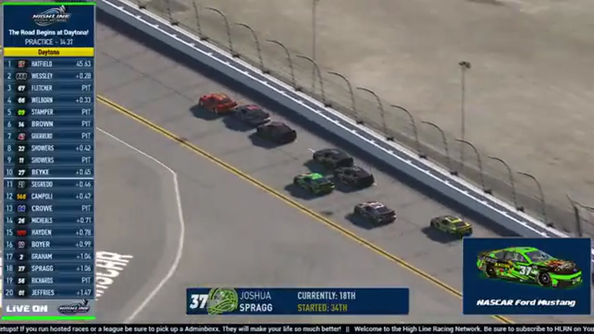

Joshua Sprag
Team assignment not stated in the structured owner record.
AN OFFICIAL-TAPE FOOTPRINT, NOT A RESULTS CLAIM
- Official files
- 4
- Central editions
- 0
- Exact tape cues
- 2
- Accepted podiums
- 0
Joshua Sprag appears in 4 official HLRN broadcast files across Season 2. The current result ledger does not assign this driver a supported top-three finish. A consistently stated team affiliation remains open for owner review. The currently indexed source window runs from February 17, 2026 through July 20, 2026.
The primary chapter index supplies 2 direct jump points. Talladega is the most frequent named track in the current appearance ledger. The densest direct-tape categories are incident (2 cues). Those counts describe where the name is easiest to find; they are not fault, pace, or performance grades. A source-attributed car frame is published with its original video and timestamp. That is the current discovery map for Joshua Sprag.
Official name signals are used for discovery only. They do not become starts, points, incident counts, or an ability grade. This page is deliberately detailed about the tape and restrained about the unavailable competition record. Separately, 8 Highline Live files sit on the bonus shelf and never enter the official season ledger. The displayed name is labeled broadcast lower third confirmed; that status remains visible so an owner roster can strengthen or correct the identity without rewriting the evidence trail. Those boundaries define Joshua Sprag's public HLRN file.
2 featured race-tape cues
These are discovery routes into complete HLRN broadcasts, not performance grades or inferred results.
- S2 / R3 · INCIDENT
Joshua Sprag crosses Trace McDowell to trigger Chicagoland's caution
The broadcast moves from Timothy Tyler to leader Trevor Haley when a caution appears. Replay finds Joshua Sprag moving across Trace McDowell's nose; the earlier on-screen drivers are not assigned to the crash.
Chicagoland - S2 / R1 · INCIDENT
Tyler Gothard's wall contact triggers the Daytona caution
Immediately after a weather-and-connection update, the field stacks up around a Rowdy Racing car in the wall. HLRN first checks Joshua Sprag, then corrects the identification to Tyler Gothard while reviewing the contact.
Daytona
Verified team history is not consistently stated. No position-specific top-three result is currently accepted. The public spelling has broadcast identity support; an owner roster can still add legal-name, number, and team-history detail.